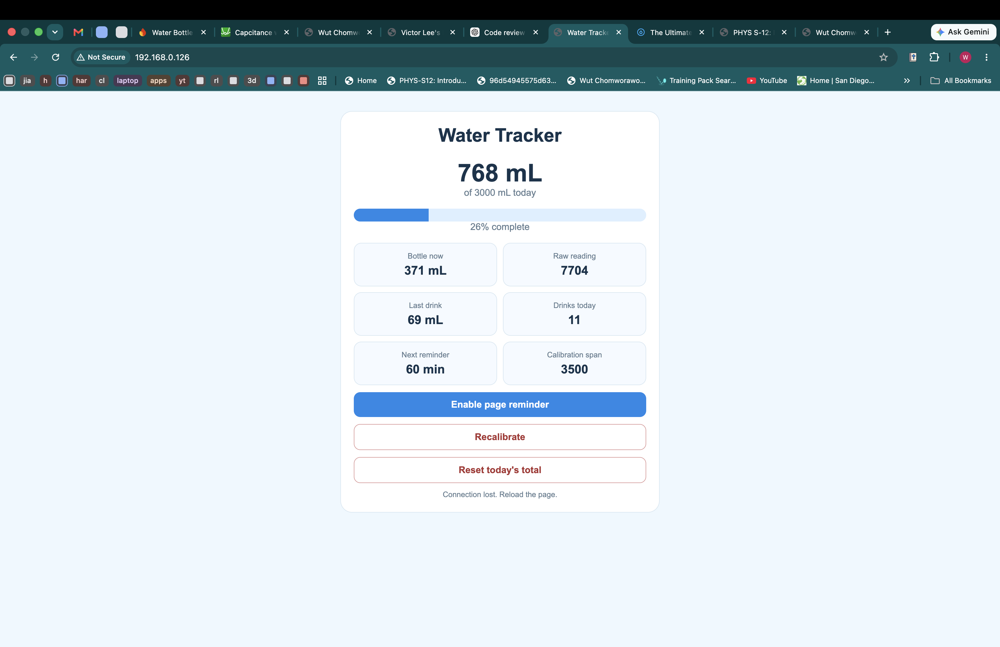

Week 7: Outputs
Document your minimum viable project either here or in the Final Project tab.
DrinkMore-Smart Water bottle attatchment
My device is a case for a water bottle that can track the amount of water you drink and sends reminders to drink in a set amount of time based on the last time you drank water.
Create a microcontroller program that integrates an input and output device, using the C++ class structure and avoiding the delay() function. Use the oscilliscope to measure the signals on one of the pins of your output device.
3D print


I 3D printed the case for the bottle as I needed to use threads in my design to create the enclosure in the base of my case to store the microcontroler and battery. My print consists of two parts the acutal case that can fit the waterbottle, I also created a lid that has threads on the outside cylinder with a hollow part on the inside to store the battery and microcontroler. I encountered my first problem in my first print is I printed the wrong size so threads. I reprinted the cap with the correct thread size, however there was still a lot of friction and is really hard to screw in and out.
I followed this youtube tutorial to create threads in fusion.
PCB

I have documented the PCB creation process of my MVP in the "Week 8: CNC" page of website.
Click Me! Link to PCB website page
Wiring

I connected the wires from my PCB to two pieces of copper tape using solder, the pieces of copper tape are attatched onto the side of my 3D printed case opposite from each other.
Calibration

I used the code below which I also used in the week 6 project that also involved capacitance. My results were pretty linear as the values for capacitance increased in equal intervals when I increased the amount of water inside the bottle by 50 ml. However, I encountered a problem as the next morning after I calibrated the capacitance the values became very different from the ones I got yesterday which ruined what progress I had on the code yesterday, I was also scared that this would happen again.
long result; //variable for the result of the tx_rx measurement.
int analog_pin = A0;
int tx_pin = D4;
int ledPin = D8;
int ledPin2 = D6;
int ledPin3 = D7;
void setup() {
pinMode(tx_pin, OUTPUT); //Pin 4 provides the voltage step
Serial.begin(9600);
pinMode(ledPin, OUTPUT);
pinMode(ledPin2, OUTPUT);
pinMode(ledPin3, OUTPUT);
}
void loop() {
result = tx_rx();
Serial.println(result);
if (result > 300000) {
digitalWrite(ledPin, HIGH);
digitalWrite(ledPin2, LOW);
digitalWrite(ledPin3, LOW);
} else if (result > 70000) {
digitalWrite(ledPin2, HIGH);
digitalWrite(ledPin, LOW);
digitalWrite(ledPin3, LOW);
} else {
digitalWrite(ledPin3, HIGH);
digitalWrite(ledPin, LOW);
digitalWrite(ledPin2, LOW);
}
}
long tx_rx() { // Function to execute rx_tx algorithm and return a value
// that depends on coupling of two electrodes.
// Value returned is a long integer.
int read_high;
int read_low;
int diff;
long int sum;
int N_samples = 100; // Number of samples to take. Larger number slows it down, but reduces scatter.
sum = 0;
for (int i = 0; i < N_samples; i++) {
digitalWrite(tx_pin, HIGH); // Step the voltage high on conductor 1.
read_high = analogRead(analog_pin); // Measure response of conductor 2.
delayMicroseconds(100); // Delay to reach steady state.
digitalWrite(tx_pin, LOW); // Step the voltage to zero on conductor 1.
read_low = analogRead(analog_pin); // Measure response of conductor 2.
diff = read_high - read_low; // desired answer is the difference between high and low.
sum += diff; // Sums up N_samples of these measurements.
}
return sum;
}
Coding
First Iteration
Click Me! Link to first iterationAt first my code tracked the water in the bottle and responded according to what the readings gave back. For example, if the water level increased by 50 mL it would could as the person refilling the water bottle, and if the water level decreased by 50 mL it would mean that the person drank a certain amount of water and it would keep track of that. The reason there must be a minimal threshold of 50 mL is because the capacitance sensor is very prone to jumping around a small amount and I did not want the code to include in the total water drank. The code was also able to print a message to remind the user to drink water after a certain amount of time that the water level did not change atleast 50 mL.
Second(Final) Iteration

The upgraded code now is able to host a website to show the drinking progress and other features. The code starts with connecting the ESP32 microcontroler to the makerspace wifi and printing the adress to the website. Then the website is hosted with the specifications that are written in the code. Then the ESP32 reads the capacitive sensor using the same code as the first iteration and the project done in week 6. Then the readings are averaged over a time period of 5 seconds to reduce the swining of numbers and also makes it easier to read and troubleshoot. The website then asks for calibration values, which are minimum values and maximum values with the minimum value being when the water bottle is taken out and the maximum value is when the water bottle is full and inside the case. The reading is then convereted to milliliters and limited to not be less than 0 and more than 500 milliliters. Then readings are smoothed to reduced the swining of number as the new value is only affects the result 25% with 75% being based on the last number using the code: filteredWater = 0.25 * newWater + 0.75 * filteredWater; The code then sets the starting water level to become the reference that will be compared with future readings to detect if water has been drunk. The code detects if water has been drunk by subtracting the reference water level that was set up in the last step with the current water level and if that number is greater than 50 mL the difference is counted as the water drunk and the code records that number, adding it to the previous total amount of water drunk. The code also dectects refilling (if the water level increases by 50 mL) then activates the code that will set the reference water level to the water level after the refill. The website then requests data to update the website, the ESP32 responds with the data, examples include the total water drunk, current water level, raw capacitance reading, amount of last drink, the number of drinks today, and how long until the next reminder. Then the percentage bar for the goal of water drunk is calculated. The website also has a reminder timer that can measure the amount of time after your last drink and will send a message to remind you to drink water.
Disclaimer: AI was used in assistance for codingProblems&Solutions

As I have stated in the calibration section, the capacitive sensor is very sensitive to environmental changes and that the readings were very different from when I took readings the previous night or the next morning. To solve this problem of inconstancy I edited the code to require a calibration by taking the maximum and minimum values of the sensor that I explained in the final iteration section. This ensures that the code would be able to work under any environmental changes.
MVP in action
MVP in action
Website features
Reflection&Improvements
The MVP is able to detect water being added or removed and translate that to the website very well. However the cons are that the website takes really long to load and readings are not very accurate, as when I removed around 200 mL of water it only registered as 63 mL. For my final project I will use another sensor in conjuction with the capacitive sensor to create more accurate readings. I might also change the thread system of attatching the body and lid to a press fit system of attatching the lid to the body.